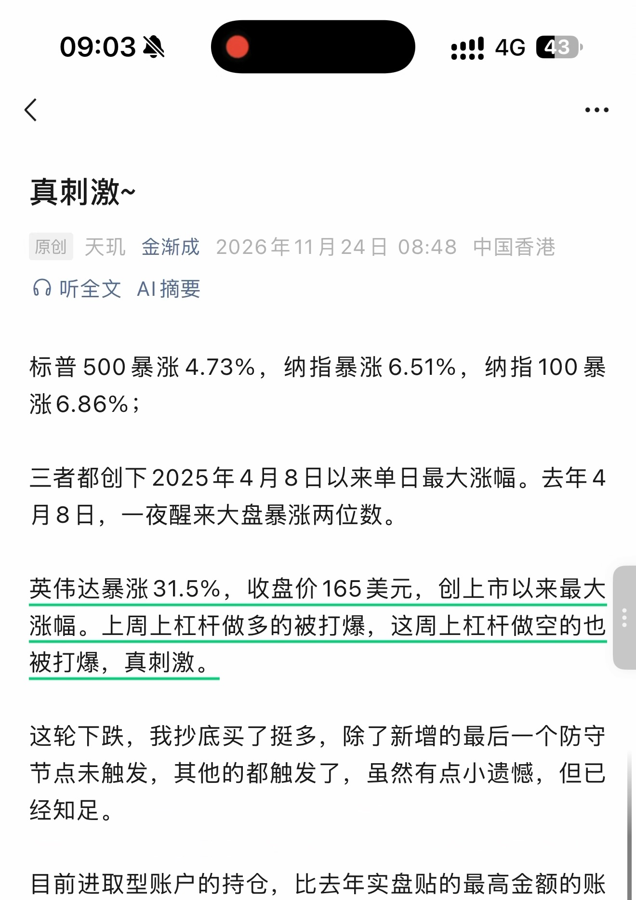
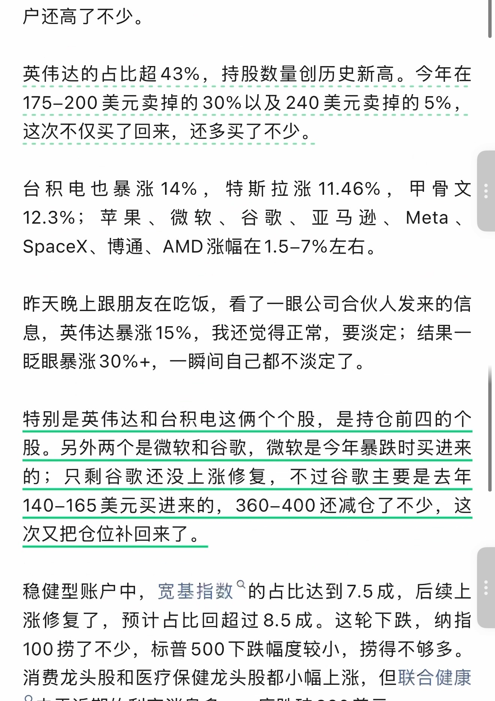
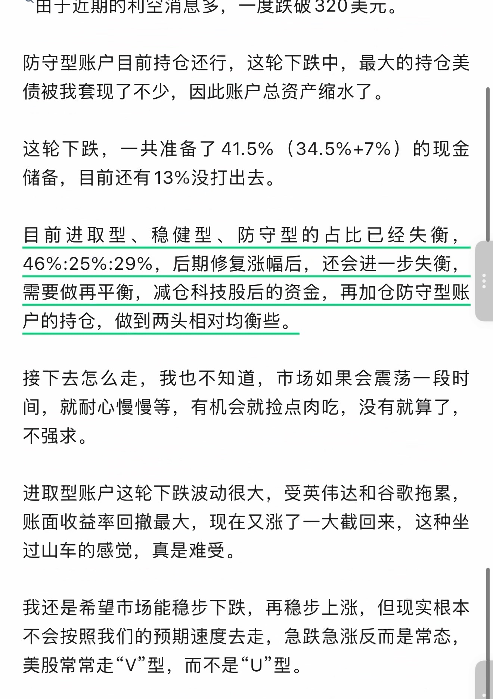
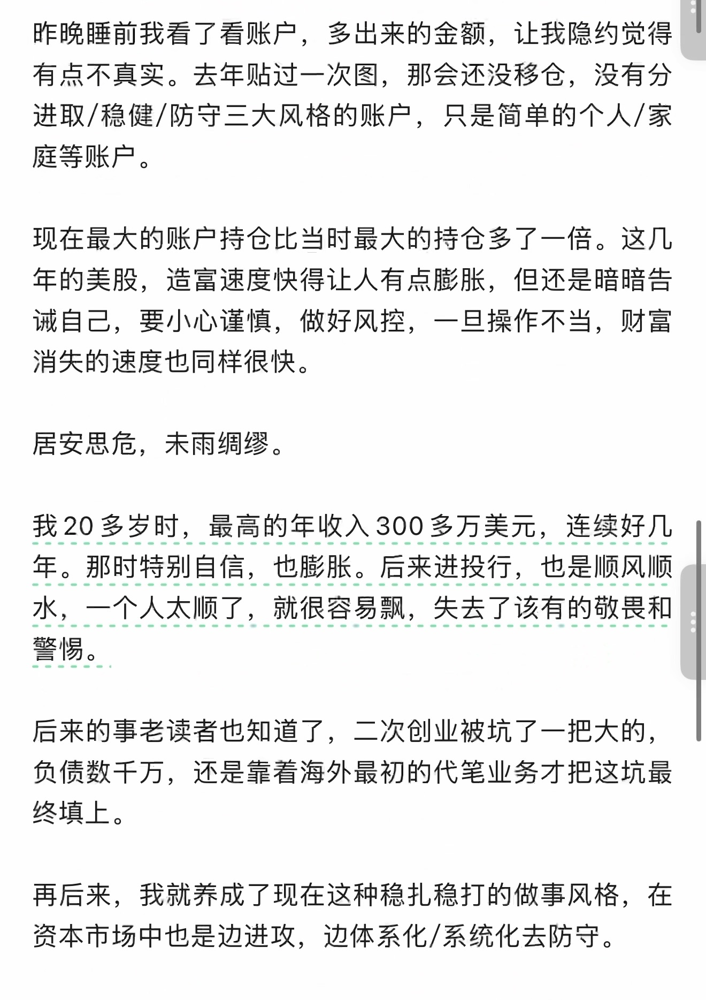
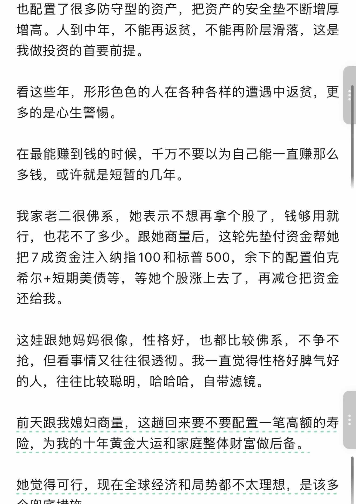
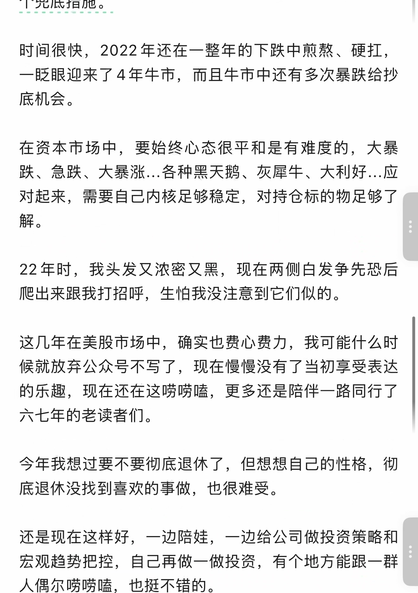
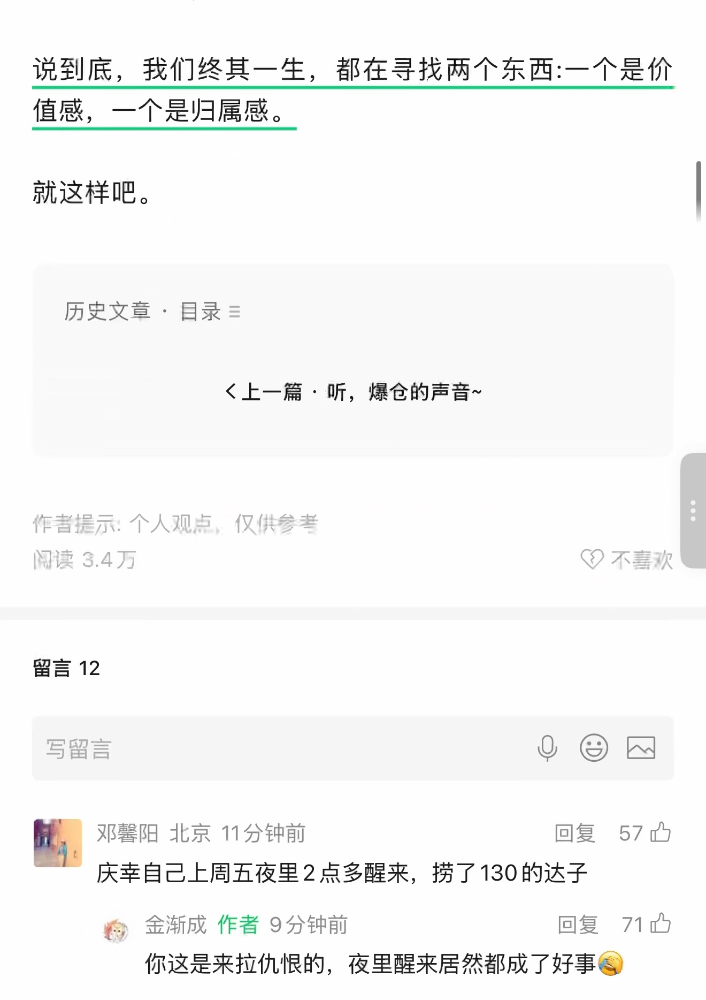
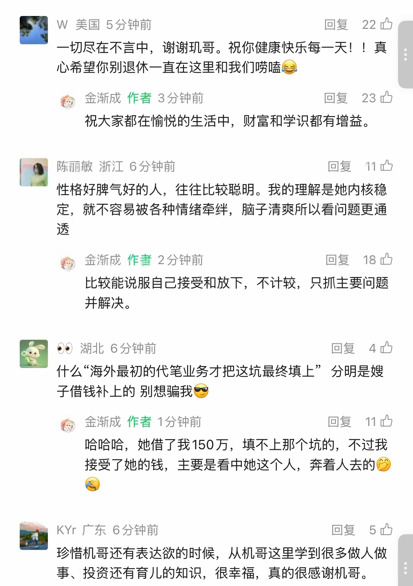
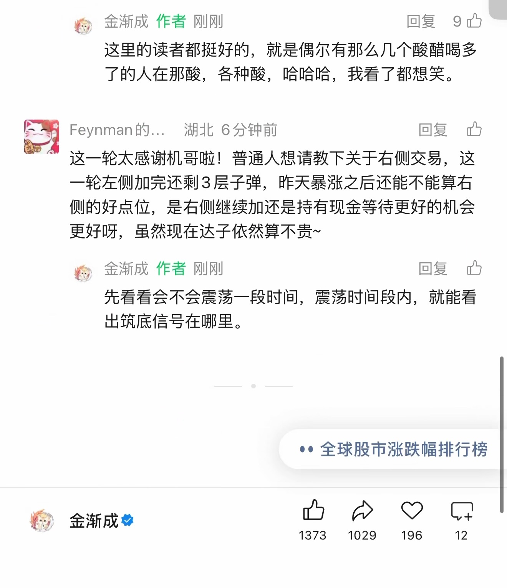

真刺激~
识别文字连续阅读 · 原图附后
原始 PDF 不公开，本页展示捕获页面的截图。 识别文字按页序连续显示，全部原始截图附在文末，便于对照。文字由视觉转录整理，尚未经人工逐字核对，可能存在错字、漏字、漏行、顺序或断行错误。留言与作者回复仅限截图中可见的内容，不代表完整线上留言，也未据此推断留言总数。
OCR 识别提示（待核对）
- OCR/视觉转录文字，尚未逐字校对；可能错字、漏字、漏行，数字、姓名、表情、标点及断行也可能有误，请以截图为准。
- 这里只保留 PDF 已截到的正文、留言和作者回复；截图以外的留言不在此存档中。
- 未从截图推断留言总数或回复关系；手机界面文字也可能混入 OCR。
- 方括号中的表情说明是转录注释，原始表情请对照截图。
- 页面边界仅露出少量字形的重复行归到文字主体可见的相邻页；不推断缺失内容。
识别文字
文字按截图页序整理；页边重复行仅保留一次，原图和 PDF 完整保留。方括号中的表情说明为转录注释。
第 1 页对照原图
[顶部状态栏]
09:03 · 静音 · 4G · 电量43%
真刺激~
原创 天玑 金渐成 2026年11月24日 08:48 中国香港
听全文 AI摘要
标普500暴涨4.73%，纳指暴涨6.51%，纳指100暴涨6.86%；
三者都创下2025年4月8日以来单日最大涨幅。去年4月8日，一夜醒来大盘暴涨两位数。
英伟达暴涨31.5%，收盘价165美元，创上市以来最大涨幅。上周上杠杆做多的被打爆，这周上杠杆做空的也被打爆，真刺激。
这轮下跌，我抄底买了挺多，除了新增的最后一个防守节点未触发，其他的都触发了，虽然有点小遗憾，但已经知足。
目前进取型账户的持仓，比去年实盘贴的最高金额的账
第 2 页对照原图
户还高了不少。
英伟达的占比超43%，持股数量创历史新高。今年在175-200美元卖掉的30%以及240美元卖掉的5%，这次不仅买了回来，还多买了不少。
台积电也暴涨14%，特斯拉涨11.46%，甲骨文12.3%；苹果、微软、谷歌、亚马逊、Meta、SpaceX、博通、AMD涨幅在1.5-7%左右。
昨天晚上跟朋友在吃饭，看了一眼公司合伙人发来的信息，英伟达暴涨15%，我还觉得正常，要淡定；结果一眨眼暴涨30%+，一瞬间自己都不淡定了。
特别是英伟达和台积电这俩个个股，是持仓前四的个股。另外两个是微软和谷歌，微软是今年暴跌时买进来的；只剩谷歌还没上涨修复，不过谷歌主要是去年140-165美元买进来的，360-400还减仓了不少，这次又把仓位补回来了。
稳健型账户中，宽基指数的占比达到7.5成，后续上涨修复了，预计占比回超过8.5成。这轮下跌，纳指100捞了不少，标普500下跌幅度较小，捞得不够多。消费龙头股和医疗保健龙头股都小幅上涨，但联合健康
第 3 页对照原图
由于近期的利空消息多，一度跌破320美元。
防守型账户目前持仓还行，这轮下跌中，最大的持仓美债被我套现了不少，因此账户总资产缩水了。
这轮下跌，一共准备了41.5%（34.5%+7%）的现金储备，目前还有13%没打出去。
目前进取型、稳健型、防守型的占比已经失衡，46%:25%:29%，后期修复涨幅后，还会进一步失衡，需要做再平衡，减仓科技股后的资金，再加仓防守型账户的持仓，做到两头相对均衡些。
接下去怎么走，我也不知道，市场如果会震荡一段时间，就耐心慢慢等，有机会就捡点肉吃，没有就算了，不强求。
进取型账户这轮下跌波动很大，受英伟达和谷歌拖累，账面收益率回撤最大，现在又涨了一大截回来，这种坐过山车的感觉，真是难受。
我还是希望市场能稳步下跌，再稳步上涨，但现实根本不会按照我们的预期速度去走，急跌急涨反而是常态，美股常常走“V”型，而不是“U”型。
第 4 页对照原图
昨晚睡前我看了看账户，多出来的金额，让我隐约觉得有点不真实。去年贴过一次图，那会还没移仓，没有分进取/稳健/防守三大风格的账户，只是简单的个人/家庭等账户。
现在最大的账户持仓比当时最大的持仓多了一倍。这几年的美股，造富速度快得让人有点膨胀，但还是暗暗告诫自己，要小心谨慎，做好风控，一旦操作不当，财富消失的速度也同样很快。
居安思危，未雨绸缪。
我20多岁时，最高的年收入300多万美元，连续好几年。那时特别自信，也膨胀。后来进投行，也是顺风顺水，一个人太顺了，就很容易飘，失去了该有的敬畏和警惕。
后来的事老读者也知道了，二次创业被坑了一把大的，负债数千万，还是靠着海外最初的代笔业务才把这坑最终填上。
再后来，我就养成了现在这种稳扎稳打的做事风格，在资本市场中也是边进攻，边体系化/系统化去防守。
第 5 页对照原图
也配置了很多防守型的资产，把资产的安全垫不断增厚增高。人到中年，不能再返贫，不能再阶层滑落，这是我做投资的首要前提。
看这些年，形形色色的人在各种各样的遭遇中返贫，更多的是心生警惕。
在最能赚到钱的时候，千万不要以为自己能一直赚那么多钱，或许就是短暂的几年。
我家老二很佛系，她表示不想再拿个股了，钱够用就行，也花不了多少。跟她商量后，这轮先垫付资金帮她把7成资金注入纳指100和标普500，余下的配置伯克希尔+短期美债等，等她个股涨上去了，再减仓把资金还给我。
这娃跟她妈妈很像，性格好，也都比较佛系，不争不抢，但看事情又往往很透彻。我一直觉得性格好脾气好的人，往往比较聪明，哈哈哈，自带滤镜。
前天跟我媳妇商量，这趟回来要不要配置一笔高额的寿险，为我的十年黄金大运和家庭整体财富做后备。
她觉得可行，现在全球经济和局势都不太理想，是该多
第 6 页对照原图
个兜底措施。
时间很快，2022年还在一整年的下跌中煎熬、硬扛，一眨眼迎来了4年牛市，而且牛市中还有多次暴跌给抄底机会。
在资本市场中，要始终心态很平和是有难度的，大暴跌、急跌、大暴涨...各种黑天鹅、灰犀牛、大利好...应对起来，需要自己内核足够稳定，对持仓标的物足够了解。
22年时，我头发又浓密又黑，现在两侧白发争先恐后爬出来跟我打招呼，生怕我没注意到它们似的。
这几年在美股市场中，确实也费心费力，我可能什么时候就放弃公众号不写了，现在慢慢没有了当初享受表达的乐趣，现在还在这唠唠嗑，更多还是陪伴一路同行了六七年的老读者们。
今年我想过要不要彻底退休了，但想想自己的性格，彻底退休没找到喜欢的事做，也很难受。
还是现在这样好，一边陪娃，一边给公司做投资策略和宏观趋势把控，自己再做一做投资，有个地方能跟一群人偶尔唠唠嗑，也挺不错的。
第 7 页对照原图
说到底，我们终其一生，都在寻找两个东西:一个是价值感，一个是归属感。
就这样吧。
[文章导航与提示]
历史文章 · 目录
< 上一篇 · 听，爆仓的声音~
作者提示: 个人观点，仅供参考
阅读 3.4万 · 不喜欢
留言 12
[留言 1]
邓馨阳｜北京｜11分钟前｜赞57
庆幸自己上周五夜里2点多醒来，捞了130的达子
[作者回复留言 1]
金渐成（作者）｜9分钟前｜赞71
你这是来拉仇恨的，夜里醒来居然都成了好事[捂脸哭笑表情]
第 8 页对照原图
[留言 2]
W｜美国｜5分钟前｜赞22
一切尽在不言中，谢谢玑哥。祝你健康快乐每一天！！真心希望你别退休一直在这里和我们唠嗑[笑哭表情]
[作者回复留言 2]
金渐成（作者）｜3分钟前｜赞23
祝大家都在愉悦的生活中，财富和学识都有增益。
[留言 3]
陈丽敏｜浙江｜6分钟前｜赞11
性格好脾气好的人，往往比较聪明。我的理解是她内核稳定，就不容易被各种情绪牵绊，脑子清爽所以看问题更通透
[作者回复留言 3]
金渐成（作者）｜2分钟前｜赞18
比较能说服自己接受和放下，不计较，只抓主要问题并解决。
[留言 4]
[双眼表情]｜湖北｜6分钟前｜赞4
什么“海外最初的代笔业务才把这坑最终填上” 分明是嫂子借钱补上的 别想骗我[墨镜笑表情]
[作者回复留言 4]
金渐成（作者）｜1分钟前｜赞11
哈哈哈，她借了我150万，填不上那个坑的，不过我接受了她的钱，主要是看中她这个人，奔着人去的[捂嘴偷笑表情][捂脸哭笑表情]
[留言 5]
KYr｜广东｜6分钟前｜赞5
珍惜机哥还有表达欲的时候，从机哥这里学到很多做人做事、投资还有育儿的知识，很幸福，真的很感谢机哥。
第 9 页对照原图
[作者回复留言 5]
金渐成（作者）｜刚刚｜赞9
这里的读者都挺好的，就是偶尔有那么几个酸醋喝多了的人在那酸，各种酸，哈哈哈，我看了都想笑。
[留言 6]
Feynman的...｜湖北｜6分钟前｜赞0
这一轮太感谢机哥啦！普通人想请教下关于右侧交易，这一轮左侧加完还剩3层子弹，昨天暴涨之后还能不能算右侧的好点位，是右侧继续加还是持有现金等待更好的机会更好呀，虽然现在达子依然算不贵~
[作者回复留言 6]
金渐成（作者）｜刚刚｜赞0
先看看会不会震荡一段时间，震荡时间段内，就能看出筑底信号在哪里。
[底部界面]
悬浮提示：全球股市涨跌幅排行榜
金渐成（认证标记）
点赞 1373 · 分享 1029 · 喜欢 196 · 留言 12
原始图片 · 9 页
第 1 页 · 原始截图


第 2 页 · 原始截图


第 3 页 · 原始截图


第 4 页 · 原始截图


第 5 页 · 原始截图


第 6 页 · 原始截图


第 7 页 · 原始截图


第 8 页 · 原始截图


第 9 页 · 原始截图


按日期浏览全部来源（同日按条目标识排序）
回到页首